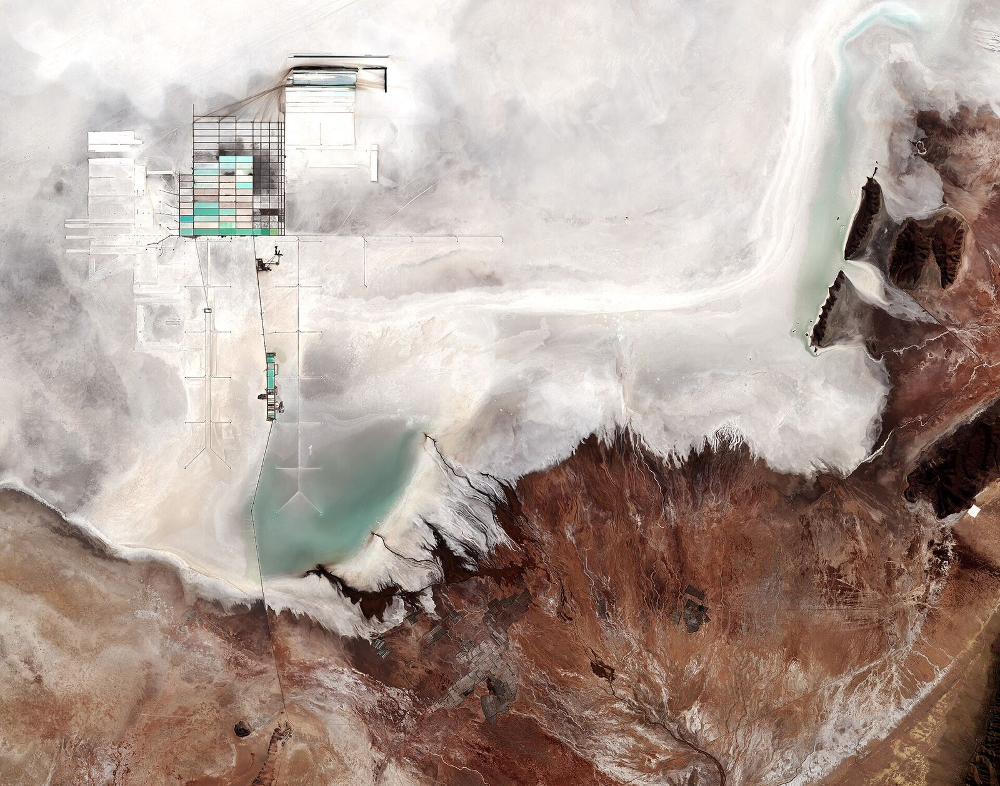

Uyuni Goes Industrial: YLB and China's CBC Advance $1bn Direct-Extraction Plants
Two DLE plants target 35,000 tonnes a year with the Bolivian state keeping 51%. A parallel $970m agreement with Russia's Uranium One adds 14,000 tonnes more.

Bolivia holds the largest lithium resource on Earth and produces almost none of it. That paradox — decades old — is now being tested by the most serious industrial push in the Salar de Uyuni's history.
State firm Yacimientos de Litio Bolivianos (YLB) and China's CBC Investments are advancing a $1bn agreement to build two lithium carbonate plants at Uyuni using direct lithium extraction (DLE) technology, with a combined target capacity of 35,000 tonnes per year. YLB keeps a 51% stake in the joint venture; CBC holds 49%.
In parallel, Bolivia signed a $970m agreement with Russia's Uranium One Group for an additional plant with a design capacity of 14,000 tonnes a year — meaning the country's two flagship deals, if delivered, would multiply national output by more than tenfold.
A proof of concept for DLE — and for Bolivia
The CBC project doubles as the first large-scale commercial test of direct extraction at Uyuni. If the plants reach design capacity with battery-grade output, they validate the technical pathway for the salar's industrialisation; if they stall, they will confirm the skeptics who note that Bolivia's brines are high in magnesium and its projects high in politics.
The current baseline is modest: YLB's first industrial plant, opened in late 2023, expects to reach 3,600 tonnes of lithium carbonate this year — far below its original targets.
New government, new posture
The political frame has shifted too. President Rodrigo Paz, in office since November 2025, has moved Bolivia away from strict resource protectionism and closer to Washington, betting that foreign capital can help stabilise an economy strained by inflation and dwindling reserves. For the first time in years, all three corners of the Lithium Triangle are courting investment simultaneously.